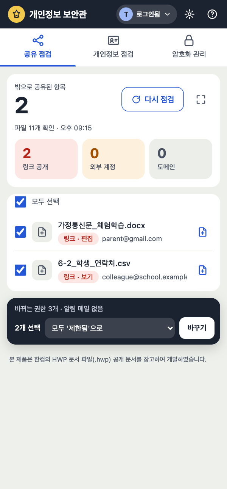

구글 드라이브 속 개인정보,
내 컴퓨터 안에서 지킵니다
공유 권한 점검 · 개인정보 점검 · 암호화 관리를 한곳에서. 파일 내용은 외부 서버로 보내지 않습니다.
무료 다운로드사용법 보기
위험한 공유 정리
- 「점검 시작」 — 내 드라이브 전체를 훑습니다
- 링크 공개 / 외부 계정 / 도메인 칸을 눌러 걸러 보기
- 체크 → 조치 고르고 「바꾸기」
- 잘못 바꿨으면 「되돌리기」
개인정보 파일 찾기
- 드라이브에서 파일·폴더 선택
- 「검사」
- 「주민번호 30」처럼 종류별 건수 확인
- 「개인정보 파일 암호화」로 바로 잠그기
암호화하고 열기
- 드라이브에서 파일 선택 → 「암호화하기」
- 이름은 「상담기록.hwp (암호화 …).7z」처럼 그대로
- 드라이브에서 더블클릭하면 크게 열림
- 「풀기」 → 같은 폴더에 원래대로
- 15분 동안 안 쓰면 자동 잠금
바로 보기
- 한글·엑셀·워드·PDF·사진을 패널에서 바로
- 풀린 내용은 메모리에만 — 닫으면 지워짐
- 고친 파일은 「다시 암호화」로 올리기
처음 한 번
- 위쪽 「로그인」 → 권한 항목 모두 체크
- 복구 키를 만들어 종이에 적어 두기
- 개인 비밀번호 정하기 — 끝
안심하고 쓸 수 있게
🔒
내 컴퓨터에서만
검사와 암호화는 모두 내 기기에서. 통계 수집·광고·AI 전송 없음.
🗑
지우지 않습니다
원본은 확인 뒤 휴지통으로만. 영구 삭제는 하지 않습니다.
🛟
복구 키
비밀번호를 잊어도 종이에 적은 복구 키 하나로 모두 엽니다.
설치
⊞
Windows 앱
- zip을 오른쪽 클릭 → 압축 풀기
- Drive Privacy Guardian.exe 실행
- "PC 보호" 화면 → 추가 정보 → 실행
🍎
Mac 앱
- dmg를 열고 앱을 응용 프로그램으로 끌기
- 앱을 열면 경고 → 완료
- 시스템 설정 → 개인정보 보호 및 보안 → 그래도 열기
🧩
크롬 확장 프로그램
- zip 압축 풀기
chrome://extensions→ 개발자 모드 켜기- 압축해제된 확장 프로그램을 로드 → 풀린 폴더
무료 배포라 코드 서명이 없어 처음 한 번만 실행을 허용하면 됩니다. 학교 관리 PC에서 개발자 모드가 막혀 있으면 데스크톱 앱을 쓰세요.
다운로드
파일이 진짜인지 확인하려면 SHA256SUMS.txt 값과 비교하세요.